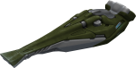
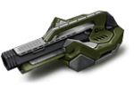
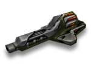
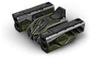

武器在
Tanki Online 中扮演着非常重要的角色。
您选择的炮塔类型将极大地影响您的游戏风格，无论是激进的闪电般快速攻击还是从受保护的位置射击。
选择与您的底盘相得益彰的炮塔很重要，尽管由于炮塔基本上独立于底盘运行（至少经过实践），
因此有无数种组合可以有效且有趣。
此外，您喜欢的武器可以升级。所有炮塔都有 7 种修改，从最弱到最强（从 Mk1 到 Mk7）。
因此，初级改装的价格并不高。你已经可以在初级阶段尝试最流行的战术，而无需花费大量的水晶。
但不可能一下子得到你想要的一切。特定的炮塔和改装件只能以特定等级购买。
重要的是要知道游戏中的一些炮塔有最大射程。
在大于此范围的距离上，这些炮塔可能根本不会造成任何伤害。
如果距离大于最大伤害范围，则最大和最小伤害统计一致减少，
直到达到最小伤害范围，此时伤害值与弱伤害相同。
例如，如果它说“最多 50m – 100%，之后 100m – 20%”，
那么炮塔的伤害统计数据将在 50 到 100 米之间从 100% 降低到 20%。
现在让我们更详细地了解炮塔。这些描述将集中在炮塔的标准操作上，没有装备改造。
近战炮塔

近战炮塔。使敌人着火，随着时间的推移造成额外伤害。
燃料容量有限，随时间恢复。
在狭窄的城市街道上，当战斗看起来更像是一个蚂蚁农场时，没有比火焰炮更好的武器了。
适用于没有机动空间的有限区域的理想炮塔。
同样出色的是将缓慢的重型坦克着火并炸毁快速的轻型底盘。
通过小心地将燃料分散到多个目标上，您可以烧毁整个坦克工厂。
即使是少量的燃料也足以点燃一个粗心的敌人，
所以你可以寻找一个新的目标，燃烧的敌人会自己炸毁。
当然，除非它的队友用冰风暴灭火。

近战炮塔。冻结敌人，有效地减缓至关重要的目标。
可以扑灭正在燃烧的坦克上的火。能量供应有限，随时间恢复。
这个炮塔背后的概念是在一个遥远的俄罗斯村庄设计的。
当地的发明者利用破碎的冷冻装置和真空吸尘器创造了一种射雪球的机制。
该造物是在附近钓鱼的工程师发现的，并在一所秘密研究型大学申请了多次升级后，该机械装置变成了强大的坦克炮塔。
用基于氟利昂的化合物覆盖目标，炮塔会损坏并冻结目标，减慢其所有移动速度。
完全冻结敌人并逃离其射程的能力允许与更强大的坦克作战。
重要的是要记住——不要把你的能量供应浪费在和你的盟友打雪仗上。
当然，这很有趣，但主战坦克有战斗要做。

近战炮塔。只能伤害一个目标。可以修理友军坦克。
具有有限的能量容量，随着时间的推移充电。
量子物理学和纳米技术的研究为直接从工厂生产的简单焊接机提供了一系列令人印象深刻的能力。
这个新的奇迹炮塔的核心是一个纳米机器人发生器，能够复制或破坏任何非有机材料的结构。
安装在炮塔上的脉冲发射器允许在几十米距离内的磁通道内传输纳米质量。
纳米机器人可以轻松识别目标，并快速将装甲分解成分子或缓慢修复它。
这样炮塔就可以对敌人造成大量伤害并修复友军，这在团战中尤为重要。
不幸的是，如果没有专门的增强装置，就不可能修理自己的坦克。

近战炮塔。按住开火键的同时，一道闪电《锁链》攻击对手。
您可以使用闪电球作为链中的“链接”来增加闪电的长度。
在储罐操作过程中触电很简单：在使用道具时忽略安全规定。
然而，触电他人是一项困难得多的任务。
油箱的绝缘性很好，每个油箱都接地。用电击造成伤害的唯一选择是将高压线直接射入装甲。
泰瑟枪的原型无法与其他近战炮塔相媲美。使该原型能够远距离射击的所有尝试都失败了。
当最伟大的发明家之一尼古拉特斯拉的特殊类型晶体管线圈的蓝图被发现时，一切都发生了变化。
新变压器不仅可以远距离用高压射击对手，还可以使用其他坦克的装甲作为中间线圈来增加射击范围。
测试台上意外的短路显示了最罕见的现象——闪电球。
工程师无视所有安全规定，朝着球状闪电的方向射出一连串闪电。
闪电击中球并到达最近的坦克群，击中了一整营全新的坦克。
这个案例展示了炮塔不可否认的战术能力。
但是，规定了一个要求——每辆油罐车都必须通过高压晶体管使用安全措施的检查，并且油罐中始终备有技术手册。
他们说有些玩家把它放在座位和自己之间。
短程炮塔

短程炮塔。使用弹片，一次弹射并伤害多个敌人。有一个用于三枪的圆形气缸。
工程师选择使用非正统的方法来制造这个炮塔。
它没有使用穿甲弹，而是使用带有钨箭的弹片弹丸，
并且其重新加载系统被替换为机器人气缸，与左轮手枪不同。
最终结果是一种将坦克钉入地下的可靠工具。
剩下的唯一一件事就是让玩家靠近敌人，因为炮塔的炮弹在很长的距离上传播得太多。
其钨箭的高密度使得子弹可以跳弹一次。
通常，让敌人躲在角落里或从侧面向敌人开火就足够了。
不过要小心，因为您也可以将子弹弹回自己体内。
双管炮塔，射程小。具有非常快的射击速度，但飞行速度很慢。
它的射击爆炸会伤害你自己，在近距离使用炮塔时要非常小心。
快速射击和双倍等离子桶将立即将您的敌人变成金属熔炉。
这种武器非常适合中短程的动态战斗，但由于等离子射击不稳定，你应该避免在靠近目标的地方发射炮塔。
如果没有适当的安全措施，您很容易将自己的水箱熔化。
等离子充电器和电容器充电的冷却系统设计得非常防故障
以至于一些油轮设法将不同的有问题的物体放在点火触发器上，以不间断地点火。
正因为如此，一些专家将炮塔射击的声音描述为额外的破坏因素，这不仅会惹恼敌人，也会惹恼队友。

短程炮塔。等离子射弹会弹射并伤害您视野之外的敌人。
具有有限的能量容量，随着时间的推移充电。
等离子枪“火龙珠”是西伯利亚顶级研究人员创造的一种新的秘密装置。
为了量产这个炮塔，一个由 22 名专家组成的团队，在未经允许的情况下，在地下掩体中连续工作了 3 年。
最终的结果非常独特。这种武器发射等离子射弹，涂有“智能”负场。
击中坦克时，弹丸会爆炸，但如果击中固体障碍物，弹丸会弹开并继续飞行。
这样，即使您看不到目标，也可以使用 Ricochet 击中目标。
不幸的是，不可能完全解决安全问题，等离子弹很容易反弹并击中最初发射它们的坦克。
“聪明”的负场很聪明，但不够聪明，无法区分敌方坦克和它的主人。
中程炮塔

中程炮塔。可以随机增加伤害。快速装弹的通用武器。
传奇的坦克炮塔，因其价格实惠且易于维护而广受欢迎。
将它安装在一个快速的底盘上，并在震惊的敌人之间滑行，
当你一个接一个地摧毁每个笨重的重型坦克时。
请记住，这个炮塔的伤害会根据与目标的距离而下降，在这种情况下，炮塔的有效载荷具有高爆弹，在任何距离都有效。
到目前为止，还没有机械师能够将子弹正确地装入机械装置中。
正因为如此，每次玩家开火时，不可能知道将使用哪一发子弹，
但另一方面，玩家的敌人也不知道什么时候从远处击中了一个巨大的惊喜。

中程导弹发射器。按住发射按钮将捕获一个目标并向敌人发射一连串导弹
自战争开始以来，对坦克的最大威胁是反坦克导弹。
那只野兽可以从很远的地方小心翼翼地将爆炸包传送到它的目标。
反坦克综合体“前锋”延续了百年传统，将快速爆炸运送到坦克及其装甲。
带有预装人工智能的目标捕获系统将使用光谱分析来在发射导弹时实现最大精度。
对于动态战斗，还包括直接射击火箭的选项。
坦克手们对这个装甲的微芯片盒并没有表现出太多的感情，
怀疑它实际上是一个清洁机器人的断头，它可以随时短路并决定从战斗中“清理”所有的坦克车。

中程反坦克机枪。六个枪管可实现令人难以置信的快速射击。
长时间使用后会过热并自燃。
坦克炮塔很酷，但有时，你想把敌人撕成小块，而不考虑重新装弹等战术上的细微差别。
这里的炮塔是您所有问题的解决方案。
一叠六个枪管，令人难以置信的射击速度，以及带有穿甲弹的自动稳定系统。
无限穿甲弹。如此多的回合，在弹幕期间，不仅您的枪管会过热，而且您的整个坦克都会过热。
您可能想继续射击，但这可能会导致您的坦克着火，这很有趣。
但是你也可以向你的盟友寻求帮助，因为冻结可以让你冷静下来，而且你不必停止疯狂。
高射击速度在精确控制方面有其缺点。吸水稳定器会在射击时减慢转弯速度，以防止炮塔锁定。
中程炮塔。高爆弹丸可以同时击中数辆坦克。
射击的爆炸也会伤害你自己的坦克，要小心，并避免在靠近目标的情况下进行战斗。
这款中程炮塔的设计充分考虑了使用传奇轰天炮的炮塔悠久历史。
激烈、充满活力的战斗爱好者的最佳选择。
它的有效载荷由新一代穿甲弹组成。
这样的子弹可以击中一群敌人，而相对较快的装弹将使您对重型敌方坦克具有优势。
但要小心——在近距离内很容易损坏你自己的坦克。
结合快速的船体，雷霆可以在经验丰富的油轮手中变成致命武器。
没有那么老练的玩家不存在，因为它们往往会很快炸毁自己。
远程炮塔

远程炮塔。可以通过多个坦克射击。有一个小的发射延迟。
如果中口径炮塔无法满足您对创意的渴望，那么这款炮塔就是您的不二之选。
一个大口径炮塔，具有闪电般的枪管速度和由贫铀制成的射弹。
一种极其强大且极其精确的动力弹丸可以在任何坦克上打出一个洞，击中站在同一条线上的多个目标。
不要忘记激光炮也需要很长时间才能重新装填，并且在每次射击之前都需要做短暂的准备。
准备开火的枪管会比节日树燃烧得更亮，经验丰富的敌人可以检测到并用作优势。
使用此炮塔的技巧类似于击剑：当您与其他专为近距离设计的炮塔进行战斗时，它既美观又坚硬且笨拙。
具有远程的火炮发射器。在弹道上发射强大的爆炸弹。
艺术坦克建造的真正代表作。最大口径，可装在坦克车体上。
我们所能找到的最具破坏性的高爆弹。
最长的枪管，最大的桶刹车。最强后坐力，可以翻转轻型坦克。
这个炮塔中的每一块都在尖叫着“最好的”。
甚至它的瞄准系统也是最……难的。
标准炮塔和其他一些增强装置通过取消高度变化机制来处理大口径。重型子弹以弧线飞向目标，使其难以瞄准。
但是，只要有足够的技能，您就可以在任何掩体后面和任何距离击中敌人。
在最激烈的情况下，您可以将枪管笔直向上瞄准，开火

“高斯”加农炮诞生于油轮的车库中，他们正在寻找提高雷暴炮对狙击手的效能的方法。
他们发现，由于电磁效应，缠绕枪管的超导线会使射击产生巨大的加速度。
以这种方式发射的弹丸具有与轨道炮相似的射程，并发出特别响亮的爆炸声。
雷霆的这种“自制”改装，搭配现代瞄准和跟踪系统，
诞生了“高斯”加农炮——战场上机动性最强的狙击手。
当射手全速躲避敌人的火力时，“高斯”制导系统在最佳时刻独立进行准确射击。
这个炮塔的一个显着特点是天线，在电磁加速器准备射击时延伸。
该炮塔因其奇特的外观而被戏称为“大耳狙击手”。

远程狙击炮塔。按住开火键可以进入狙击模式。
狙击模式下的伤害取决于你为射击充电的时间，你的坦克也将完全无法移动。
狙击战迷的绝佳选择。在常规模式下，炮塔可作为现代多功能武器综合体使用，用途惊人。
它可以煮咖啡、点披萨、支付支票，但在激烈的战斗中，它的工作方式与其他炮塔没有任何不同。
镭射炮的主要特色是二级狙击模式，进入该模式后，如果您对其进行充电，则可以显着提高射击的威力。
使用狙击模式需要坦克进入攻城模式，这意味着它不能移动。
将你的射击聚焦在敌人身上还将使用一个额外的激光指示器，
大多数现代坦克的光学系统都可以检测到它。
这就是为什么经验丰富的油轮建议永远不要长时间处于狙击模式，
否则你可能会打开你的背部以应对敌人的突然袭击。
特殊炮塔
再见宝贝！
终结者是一种特殊的炮塔，具有两种不同模式的射击能力。
使用长双炮管，它可以发出集中爆发的能量，穿透敌方坦克的装甲，从内到外造成伤害。
终结者还可以从侧面部署其火箭发射系统，用激光锁定敌人并发射由六枚火箭组成的齐射。
B0-NK 是一个专门的炮塔，只在新的军备竞赛模式中可用，然后只供有技能的坦克手以最快的速度穿过前面的炮塔。
使用这种武器很难击中敌人，需要点木板附近和良好的时机，
但是当锤子的碳化钛尖端接触到敌人的装甲时，几乎可以保证杀死敌人。
锤头还涂有先进的高能炸药，在撞击时会产生小而毁灭性的爆炸，略微降低击中敌人所需的精度。
雪人